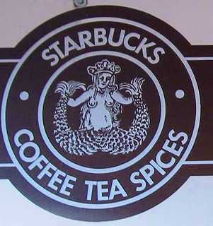
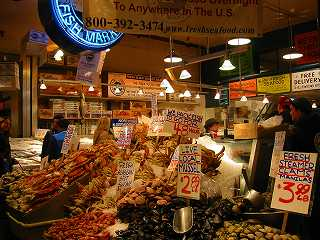
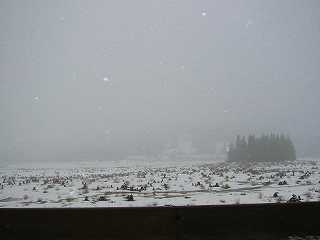
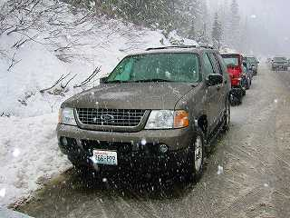
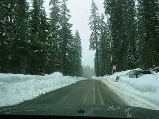
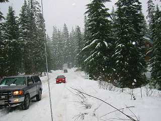
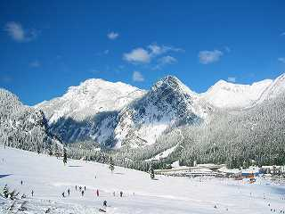
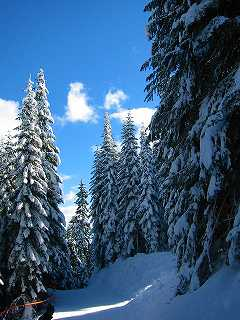
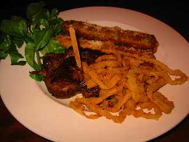

Seattle '03/02/21-02/24

シアトルといえばスターバックス発祥の地ということで言ってみました1号店。このマークは発足時のマークだそうで、垢抜けないデザインですね。パイク・プレース・マーケットのフリーマーケットみたいなエリアのお向かいです。ここは、車もフリーで置けたので良かったです。アメリカで駐車料金を払うのはあほらしいですからね。このロゴのマグカップもあったのですが$8くらいしたので止めました。

そのパイク･プレース・マーケットにはこんな店もあって、港町っぽい雰囲気です。レストランなどの値段はちょっと高めでした。おいしいシーフードというよりも雰囲気のある場所でした。

今回のメインイベントであるスキーですが、シアトルから車で1時間くらいでいけるというザ・サミットへ行きました。スキー場はインターチェンジを降りた場所がスキー場なのでとても便利です。

今回フォードエクスプローラという４WD
SUVを借りたのですが、とても頼もしくて安心して雪道を走れました。日本に帰ったら４WDほしいなぁとこの時は思っていたのでした。ところが、後々になって燃費を計算してみたら17mile/g(7km/ｌｉｔｅｒ)とカマロ費30%悪しでびっくりしました。



規模としては少し小さいので滞在するほどではなく日帰りで行けば十分という感じです。今度くるときは1週間くらい滞在しようとも思うのですが、その時はレイクタホにしようかと思っています。

小さなスキー場ではありましたが、景色は抜群でした。

たまたまClaimJumperというステーキレストランを見つけたのですが、いつもお客が行列しています。日曜夜なら空いているかと思い行ってみると、確かに空いてはいましたが40分待ち。アメリカ人が待つからにはよほどなのかと思ったら、確かに柔らかくておいしいステーキでした。ホームページを見たらチェーン店であちこちにお店があるようです。